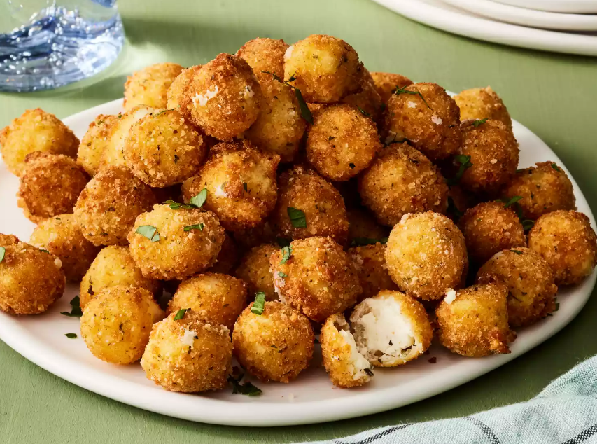

Fried Boursin Balls

Description
Fried boursin cheese in a small bite-sized package!
These fun appetizers are crunchy on the outside, with a delicious warm herby center.
Ingredients
- 1 quart canola oil
- 1 cup all-purpose flour
- 2 large eggs
- 1 cup Italian seasoned breadcrumbs
- 2 packages Boursin Garlic and Fine Herbs Cheese Bites
Steps
- Pour oil to a depth of 2 inches
- Set out 3 wide shallow bowls
- Dredge cheese in flour
- Fry boursin bites in batches